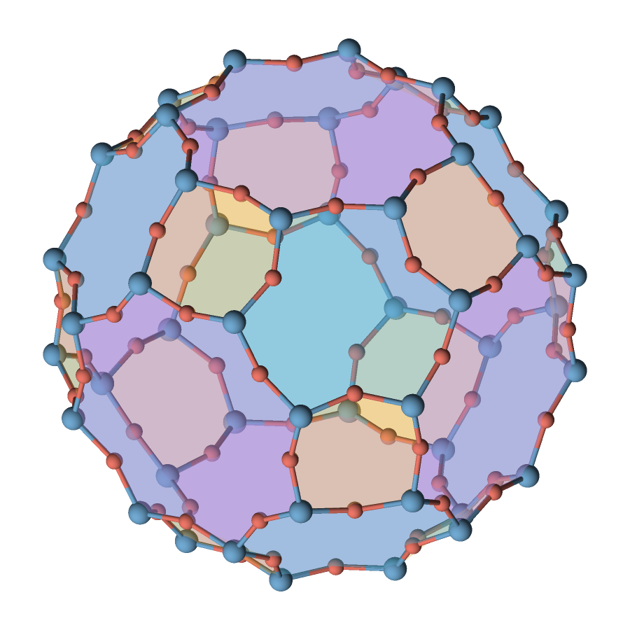

31 OCTOBER 2026 · QASR V0.6.0
Faces, clearer structures & movies
Fill the rings of a zeolite, color bonds from their atoms, draw clearer cell edges, and put a structure in motion.
New controls for your figures


- Polygon faces: provide one ordered face or a collection of tiles using vertices or atom indices, with periodic offsets, translucency and boundary lines. QASR fills your supplied loops; CIF first needs conversion.
- Atom-colored bond halves: colors meet at each bond’s midpoint. Bond radius controls thickness independently of connectivity.
- Cell-line styling: solid or dashed lines, adjustable color and spacing, and an optional white contour for contrast.
- Optional MP4 movies: camera orbits and fixed-camera reaction paths, with interpolation, stable framing and JSON/batch controls.
Download the example kit for the exact zeolite, single-face, bond, cell-line and reaction recipes.
What to check when upgrading
Both endpoint atoms must be displayed for a bond to appear. This rule is mandatory and removes stubs pointing to omitted periodic copies. With --expand-xy 1,0, bonds to the included left/right neighbors appear; bonds beyond the outermost displayed cells remain omitted. Old boundary-fragment settings are rejected.
The command is still qasr, and config/job schema versions remain 1. All existing structure formats, drawing styles, JPEG/WebP options and batch requests remain available. Faces and atom-colored bonds require the Z-buffer backend. Monocolor/dualtone modes keep their dither palette.
Movie support defaults to OFF. Enable it with shared FFmpeg libraries; the installed executable does not need a separate ffmpeg process. MP4 requires an opaque background and even dimensions no greater than 4096 pixels per axis, subject to the allocation budget. Video uses lossy YUV 4:2:0. Reaction playback visualizes supplied geometries; it does not calculate a chemical path or unwrap periodic motion.
Image/movie and report files are committed individually. Check the exit status: a report failure can follow a successful output replacement. Read the movie job and failure rules and render-report contract.
Measured workflow improvements
Polygon compositing and styled cell strokes do less repeated work. Movies reuse sampling/interpolation buffers and avoid unused snapshot copies. Internal module boundaries and ownership contracts were also simplified.
| Workflow | Before | After | Less time |
|---|---|---|---|
| Opaque polygon with labels, one thread | 103.25 ms | 70.49 ms | 31.7% |
| Dashed cell with white contour, one thread | 299.37 ms | 253.64 ms | 15.3% |
| 24-frame polygon-cage orbit, one thread | 855.95 ms | 644.81 ms | 24.7% |
All 41 workflows retained identical encoded output; all 11 movies also passed independent frame/timestamp comparisons. These are workflow-specific measurements, not a universal speedup. See the source package’s docs/performance-features.md for methods, confidence intervals and reproduction commands. The later code cleanup preserved all outputs and showed no resolved timing change.
Get v0.6.0
Download the v0.6.0 source, source checksums, or build from a checkout. This source archive contains code, tests, examples and detailed Markdown guides; it is not a prebuilt executable. The separately labeled legacy v0.3.0 archive remains unchanged.
The handbook covers all 61 CLI controls and all five schemas: config, user, job, worker and faces. It works offline, including the options search and downloadable recipes.